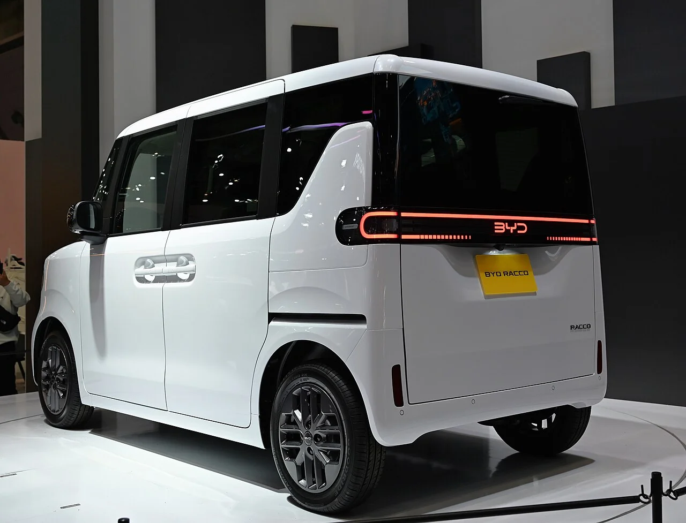
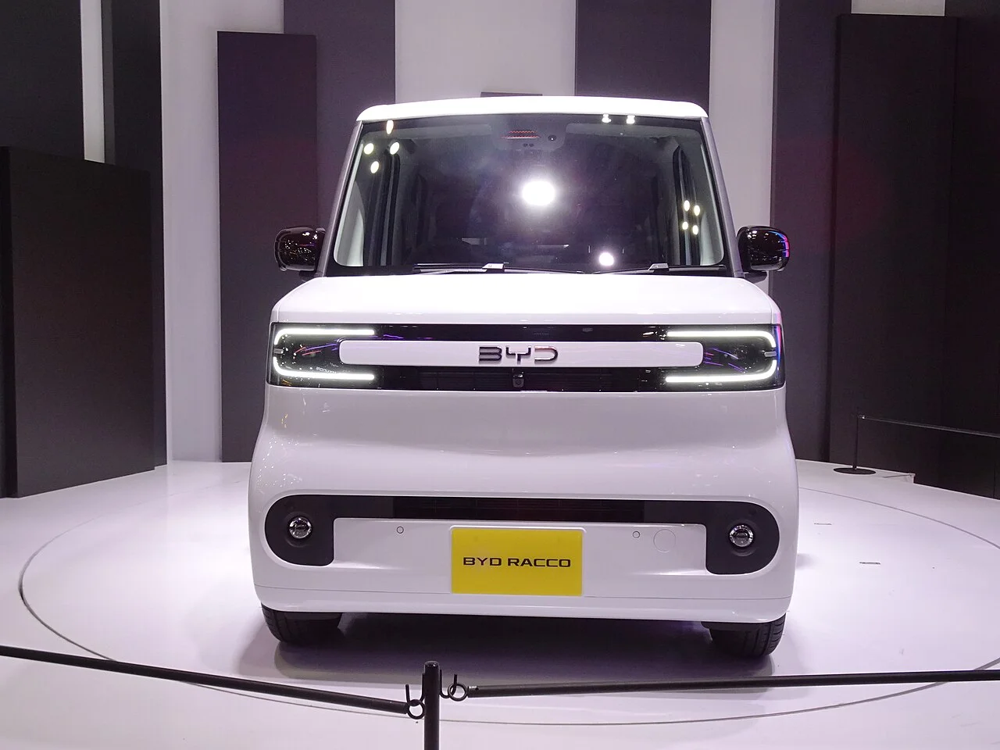
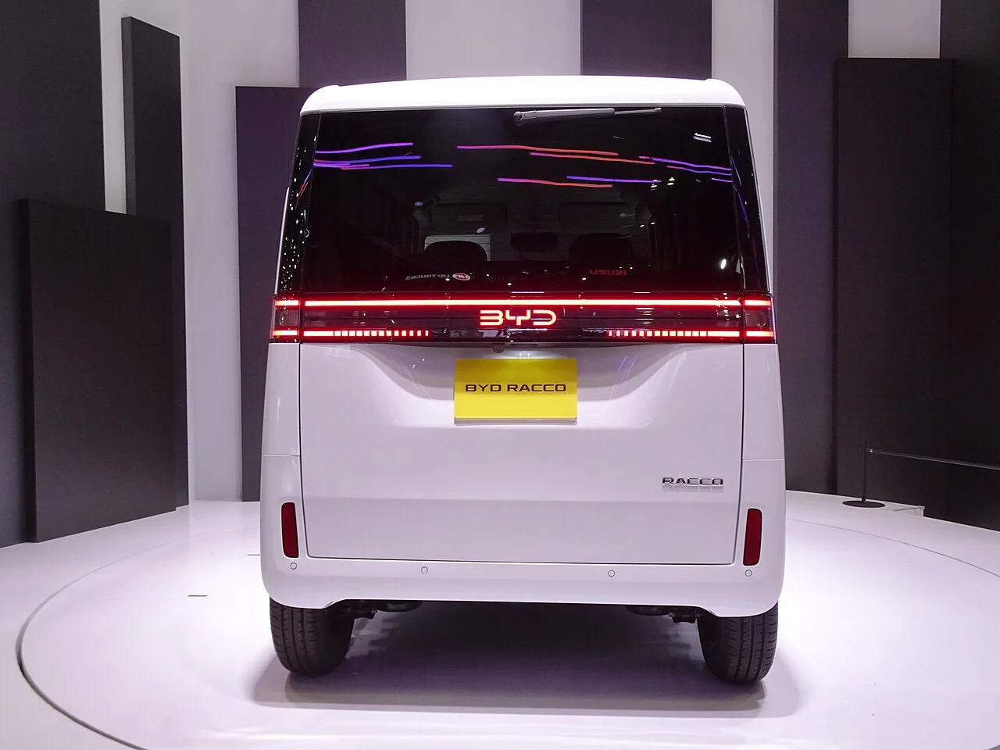

▲ 2025년 재팬 모빌리티쇼에서 처음 공개된 BYD 라코. 2026년 7월 28일 일본에서 정식 출시했다 ⓒ TTTNIS, Wikimedia Commons (CC0)
BYD가 지난 7월 28일 일본 전용 첫 경형 순수전기차 '라코(RACCO)'를 정식 출시했습니다. 도요타·혼다·닛산·스즈키 등 자국 브랜드가 굳건히 지켜온 일본 경차(케이카) 시장에 외국 브랜드가 도전한 것은 이번이 처음입니다. J6에 이어 두 번째로 나온 BYD의 일본 전용 모델로, 지난해 재팬 모빌리티쇼 2025에서 처음 공개된 뒤 약 9개월 만에 정식 출시로 이어졌습니다. 국내에는 출시되지 않는 일본 전용 모델이지만, 어떤 차인지 정리했습니다.
1. 디자인 & 편의사양 — 경형 EV 최초의 자동 슬라이딩 도어

▲ 라코 후면부. 일본 경차 규격을 정확히 맞춘 슈퍼하이트 왜건 스타일이다 ⓒ TTTNIS, Wikimedia Commons (CC0)
라코는 전장 3,395mm, 전폭 1,475mm의 일본 경차 규격을 정확히 지키면서도, 전고를 1,800mm까지 높인 '슈퍼하이트 왜건' 스타일을 채택해 좁은 차체 안에서도 넉넉한 실내 공간을 확보했습니다. 가장 눈에 띄는 특징은 경형 전기차 최초로 적용된 자동 슬라이딩 도어입니다. 양손에 짐을 든 상태에서도 발로 바닥에 투사되는 안내 표시를 이용해 문을 열 수 있는 핸즈프리 기능까지 갖췄습니다.
2. 배터리 & 가격 — 보조금 역차별을 뚫을 수 있을까

▲ 라코의 정면. 스탠다드 약 20kWh, 롱레인지 35.84kWh 배터리 중 선택할 수 있다 ⓒ RuinDig/Yuki Uchida, Wikimedia Commons (CC BY 4.0)
라코는 배터리 용량에 따라 스탠다드(약 20kWh, 목표 주행거리 200km)와 롱레인지(35.84kWh, 최대 320km) 두 가지로 나뉩니다. 뉴스와 등 국내 매체 보도에 따르면, 일본 판매가는 약 198만 엔(약 1,980만 원)부터 시작해 경쟁 모델인 닛산 사쿠라(245만 엔)보다 저렴하게 책정됐습니다. 64마력 전기모터에 10.1인치 인포테인먼트 화면, 어댑티브 크루즈 컨트롤, 후방카메라까지 갖춰 이 가격대치고는 사양도 풍부한 편입니다.
다만 변수는 보조금입니다. 일본 정부는 자국 경형 전기차에 최대 58만 엔의 보조금을 지급하는 반면, 외국 브랜드인 라코에는 15만 엔의 보조금만 적용됩니다. 초기 판매가는 라코가 더 저렴하지만, 보조금까지 반영한 최종 실구매가 격차는 크게 줄어드는 구조입니다. BYD는 공격적인 기본 가격과 넉넉한 기본 사양을 앞세워 이 보조금 격차를 정면 돌파하겠다는 전략입니다.
3. 총평 — 일본 안방을 겨냥한 BYD의 다음 승부수

▲ 라코 정후면. BYD는 2027년까지 일본에 7~8종의 신규 전기·PHEV 모델을 선보일 계획이다 ⓒ RuinDig/Yuki Uchida, Wikimedia Commons (CC BY 4.0)
BYD는 라코와 함께 플러그인 하이브리드 '씨라이언6 DM-i'를 투트랙으로 앞세워, 승용과 상용을 아우르는 'ONE BYD' 전략으로 일본 시장 공략을 강화하고 있습니다. 전국 66개 전시장을 갖춘 데 이어 2027년까지 7~8종의 신규 전기차·PHEV 모델을 추가로 선보이겠다고 밝힌 만큼, 라코는 그 시작점에 가깝습니다. 국내에는 출시되지 않는 일본 전용 모델이지만, 자국 브랜드가 절대 강자인 케이카 시장에 외국 브랜드가 정면 도전한 사례라는 점에서 국내 소비자들에게도 눈여겨볼 만한 소식입니다.